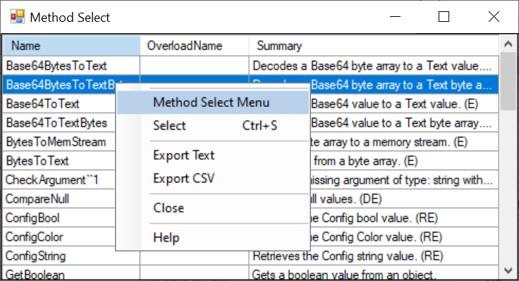

The Method names are retrieved from the code documentation file for the associated class. A Method name can be selected from this list to be assigned to a Method item.
The Context Menu can be displayed by clicking the right mouse button on the desired list item. The list item is selected and the menu items apply to the selected item or list.
If you are using a Tablet or a laptop in Tablet Mode, touch the desired list item and leave your finger on the item for a short while until a box is displayed. This shows that the touch is considered a right mouse click. Remove your finger and the context menu will be displayed.
Returns the selected item to the parent form.
The 'Export Text' menu item creates a tab delimited text file with the file name 'ExportFiles\MethodName.txt'. It attempts to display the data with the application that is associated with the '.txt' extension.
The 'Export CSV' menu item creates a comma delimited text file with the file name 'ExportFiles\MethodName.csv'. It attempts to display the data with the application that is associated with the '.csv' extension.
The 'Close' menu item closes the window.
Displays the context sensitive Help Page.